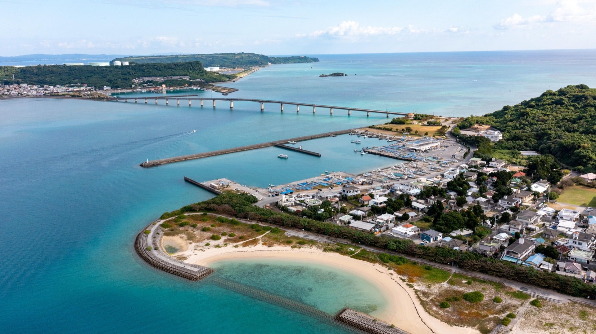
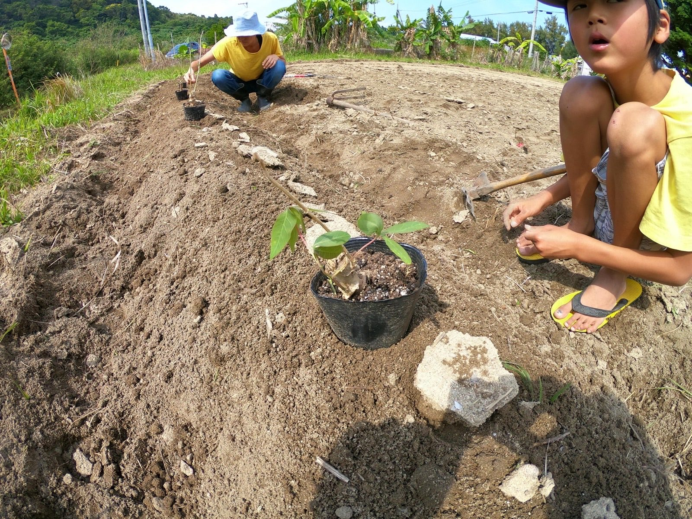
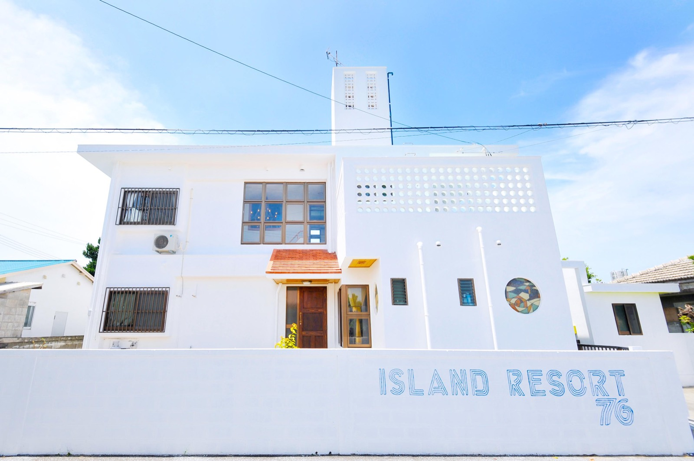

ISLAND RESORT 76
〜 風とハンモックの宿 〜
浜比嘉島の 静かで 心休まる
くつろぎの時間を
心地よい島の風がふく、広いテラスがある貸切宿。宿からビーチまで徒歩1分。車で行ける近場にも、素晴らしいビーチがいくつもあります。
広々とした屋根付きテラスには大きなハンモックがあり、ゆっくりとした島時間を過ごせます。
宿泊施設のご案内
Room
当宿は沖縄本島から橋で繋がる離島『浜比嘉島』にあります。宿からビーチまでは徒歩1分ほどの距離にあり、喧騒から離れたとても穏やかで自然豊かな環境です。
浜比嘉島は琉球神が住んだと言われる神話があり、現在でも地域の住民は伝統文化や行事を大切にしており、神聖な空気が島全体を包んでいます。心地よい島の風、美しい朝日と夕日、そして満天の星空が贈る感動的な時間を当宿でお楽しみください。
浜比嘉島について
Hamahiga Island
うるま市浜比嘉島。シルミキヨとアマミキヨという琉球開闢の祖神がこの島に住み着き、子を授かり繁栄していったという神話があり、島全体が聖地・パワースポットとなっています。
離島でありながら海中道路と浜比嘉大橋の2つの橋が本島へと繋がり、車での往来が可能です。東には朝日、西には夕日が見え、夜には満天の星空が広がります。今では少なくなった、昔ながらの古民家集落の風景もとてもお薦めです。
アクティビティ
Activity
浜比嘉島をはじめ、島嶼地域の大自然を満喫できるアクティビティがあります。人の立ち入らない島の原風景が残る場所を見ながら海を進んだり、シークレットビーチで海水浴を満喫したりできます。
自然の美しさや強さ、偉大さを感じながら、自然の大切さを実感できるツアーを案内しています。
ゆいファーム
Yui Farm
浜比嘉ゆいファームは、2025年にこの島で新規就農した、家族で営む小さな農園です。ミニトマト、ルッコラ、丸オクラ、スイートバジル、キャッサバ芋など、沖縄の気候に寄り添った野菜たちを、農薬・化学肥料を一切使わずに育てています（有機JAS基準）。
収穫した野菜は、うるマルシェや地域の飲食店などへお届けしています。
ストーリー
Story
全ての始まりは当時の私たち夫婦が、それぞれに旅をしている最中、ブラジルの東北部に位置するバイーア州サルバドールという街で出会ったことでした。旅で感じた空気、港風、熱帯の気候、土地のスピリット。それらをここ沖縄で再現したい思いから宿を始めました。
『何もしなくても、ただいる時間が豊かだと感じられる。』そんな体験を当宿で味わっていただけたら嬉しいです。
アクセス
Access
| 施設名 | ISLAND RESORT 76 （アイランドリゾートナナロク） |
|---|---|
| 住所 | 〒904-2315 沖縄県うるま市勝連浜76番 Googleマップで開く |
| 駐車場 | 敷地内無料駐車場 普通車2台分 |
| 那覇空港から | 車で60〜90分。公共交通機関での移動は大変時間が掛かるため、レンタカーの手配をお薦めしております。 |
ご予約・お問い合わせ
ご予約・空き状況の確認はAirbnbにて承っております。ご不明な点は、メール（islandresort76@gmail.com）までお気軽にお問い合わせください。
宿の空き状況・ご予約（Airbnb）お問い合わせ：islandresort76@gmail.com